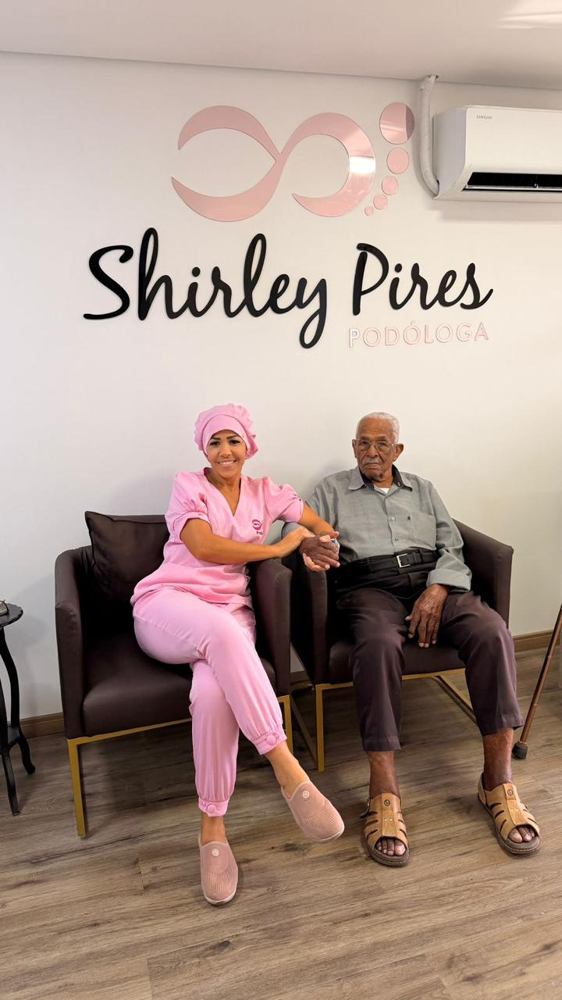
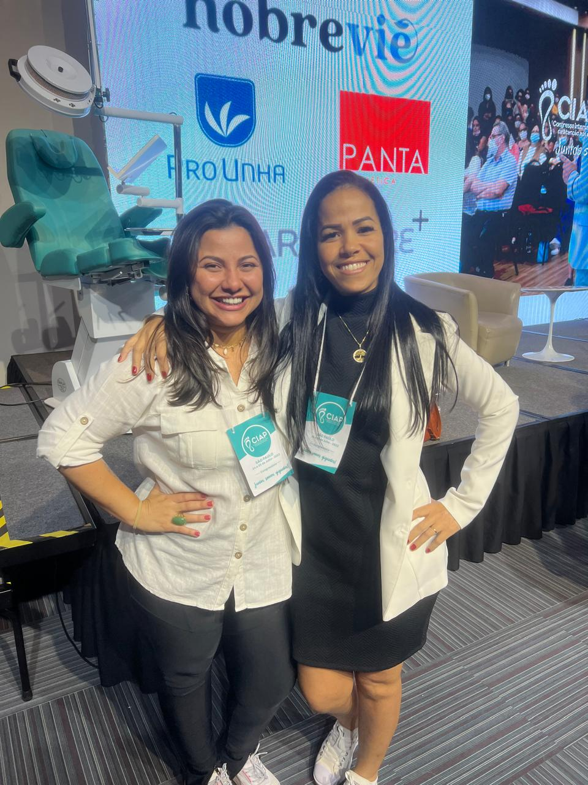
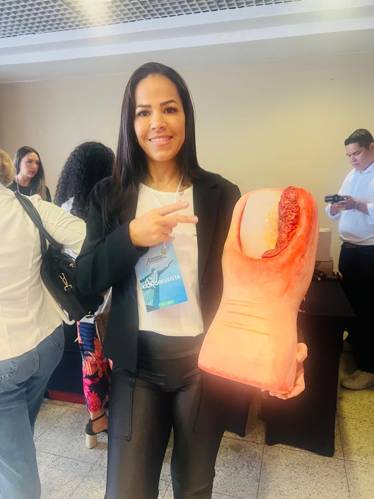
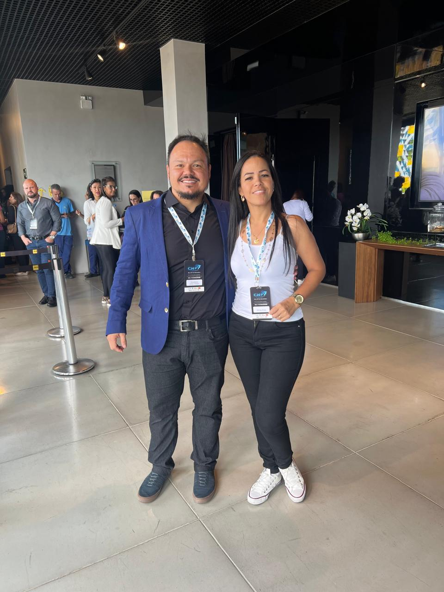
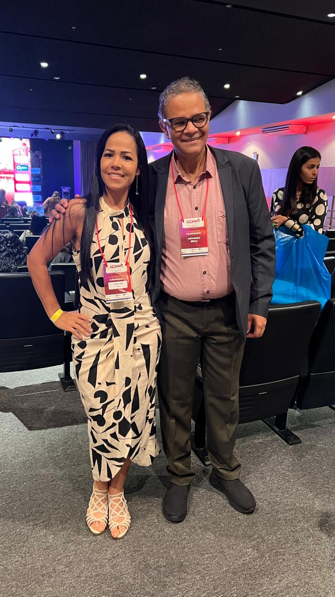
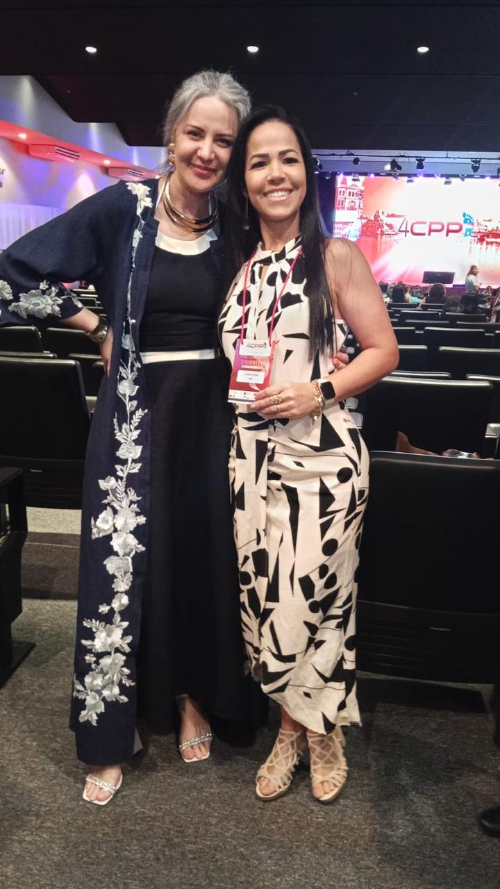

Cuidado especializado para a saúde dos seus pés
Atendimento humanizado com técnicas modernas de podologia. Tratamentos para unhas encravadas, calos, micoses, pés diabéticos e muito mais.

10+ Anos
de Experiência
Sobre Shirley Pires
Formação sólida e experiência dedicada ao cuidado dos pés.
Formação
Técnica em Podologia e Graduada (Podologista) pela Faculdade Unifil.
Especializações
Pés Diabéticos e Laserterapia.
Experiência
Atuação especializada com Pessoas com Deficiência (PCD).
Congressos
CIAP 2022, CNP 2022 e 4º CPP 2025.
Nossos Serviços
Tratamentos podológicos com técnicas modernas, biossegurança e atendimento humanizado.
Unhas Encravadas
Tratamento especializado com técnicas indolores para correção e prevenção de unhas encravadas.
Calos e Calosidades
Remoção segura de calos e calosidades, aliviando dor e desconforto ao caminhar.
Micose e Fungos
Diagnóstico e tratamento de micoses ungueais e interdigitais com acompanhamento contínuo.
Fissuras e Ressecamentos
Hidratação profunda e tratamento de fissuras nos pés, restaurando a saúde da pele.
Pés Diabéticos
Cuidados preventivos e tratamento especializado para pacientes diabéticos, evitando complicações.
Bicho de Pé e Verrugas
Remoção segura de bicho de pé e tratamento de verrugas plantares com técnicas adequadas.
Higiene e Prevenção
Orientações e cuidados preventivos para manter a saúde dos pés no dia a dia.
Podogeriatria e Cuidado Especializado
Atendimento preventivo e curativo para idosos, focando na mobilidade e no conforto.

Podogeriatria e Cuidado Especializado
Atendimento preventivo e curativo para idosos, focando na mobilidade e no conforto. Especialização em Pés Diabéticos para garantir a máxima segurança.
Participações em Eventos
Atualização constante nas maiores referências da podologia nacional — CIAP 2022, CNP 2022 e 4º CPP 2025.





O que dizem nossos pacientes
Depoimentos de quem já experimentou nosso atendimento e cuidado.
Profissional excelente! Tratou minha unha encravada com muito cuidado e sem dor. Recomendo a todos que precisam de um atendimento humanizado e competente.
Maria Fernanda S.
Unhas EncravadasSou diabético e a Shirley cuida dos meus pés com muita atenção e profissionalismo. Me sinto seguro sabendo que estou em boas mãos. Atendimento nota 10!
José Carlos M.
Pés DiabéticosEstava sofrendo muito com calos e fui muito bem atendida. O ambiente é limpo, organizado e a Shirley é super atenciosa. Meus pés nunca estiveram tão bem!
Ana Lúcia P.
Calos e CalosidadesMinha mãe idosa é paciente da Shirley há mais de 2 anos. O cuidado com ela é incrível — pontual, gentil e muito profissional. Nos sentimos acolhidos em cada consulta.
Rosana C.
PodogeriatriaTinha micose nas unhas há anos e nenhum tratamento resolvia. Com a Shirley, em poucos meses vi uma melhora enorme. Materiais esterilizados e consultório impecável!
Paulo T.
Micose e FungosFissuras profundas nos calcanhares me impediam de caminhar sem dor. Após três sessões com a Shirley, meus pés estão completamente recuperados. Serviço de altíssima qualidade!
Cláudia B.
FissurasPerguntas Frequentes
Tire suas dúvidas sobre podologia e nossos atendimentos.
Podologia dói?
O foco é o alívio. Os procedimentos são técnicos e realizados com cuidado para buscar o máximo de conforto ao paciente.
Qual a diferença entre pedicure e podologia?
A podologia é focada na saúde, no tratamento de patologias e na prevenção de doenças dos pés. A pedicure tem foco estético. São serviços complementares, mas com objetivos distintos.
Pé diabético precisa de cuidado especial?
Sim. A prevenção é vital para pacientes diabéticos. O acompanhamento especializado reduz significativamente o risco de complicações graves e feridas de difícil cicatrização.
Agende sua consulta
Entre em contato pelo formulário ou WhatsApp. Estamos prontos para cuidar dos seus pés!
Endereço
R. Corcovado, 1211 - Monte Castelo,
Contagem - MG
Telefone / WhatsApp
(31) 99441-9648
Horário de Atendimento
Seg - Sex: 08h às 18h
Sáb: 08h às 12h